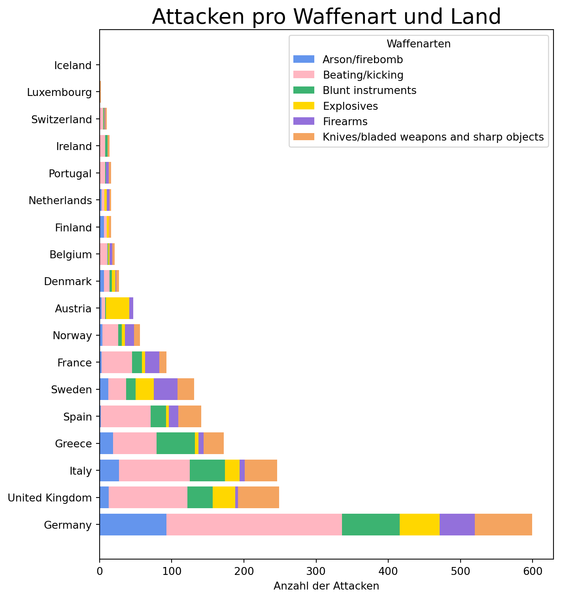
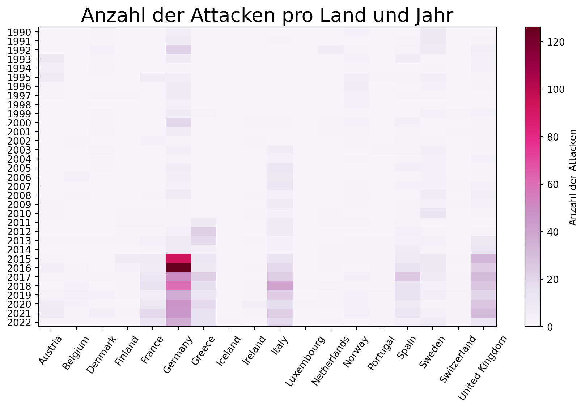
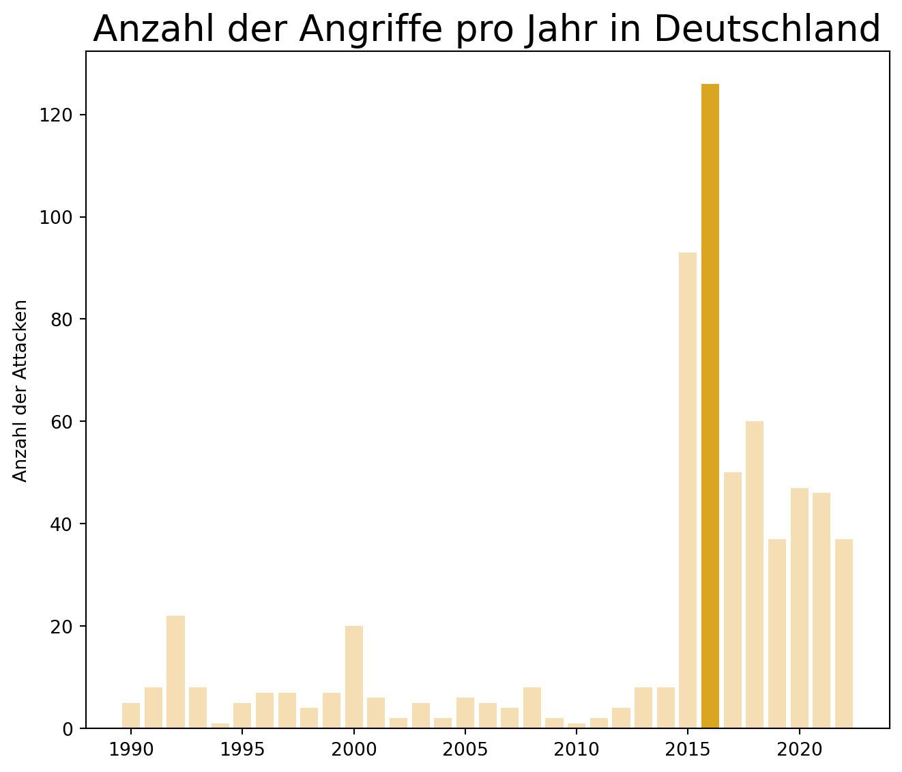
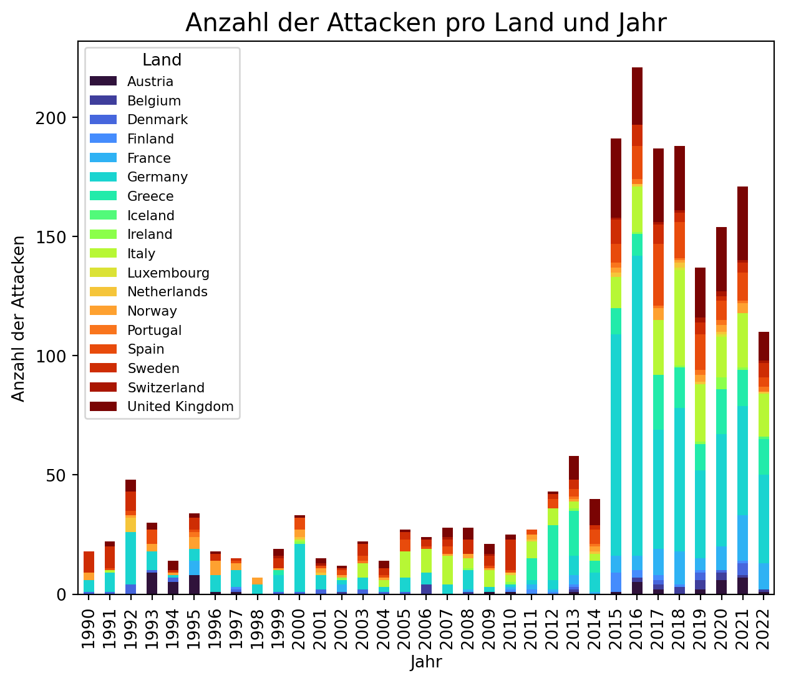
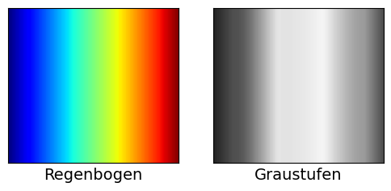

Die Farbauswahl ist entscheidend für gelungene Datenvisualisierungen. Falsche Farbwahl kann eine gute Visualisierung zerstören. Farben sollten einen Zweck erfüllen, klar sein und nicht ablenken.
Dieser Abschnitt beschäftigt sich damit, wie man Farben anpassen kann und auf was man dabei achten sollte.
In matplotlib lassen sich Farben von Elementen allgemein über den Parameter color anpassen. Diesem Parameter können wir einen bestimmten Farbnamen als String übergeben wie z.B. "blue" oder "pink". Zudem haben wir aber auch die Möglichkeit Farbnummern oder RGB-Farbcodes zu benutzen. Möchten wir eine vorgefertigte Liste an Farben verwenden, eignen sich auch colormaps.
Wie und für was wir Farben verwenden, kann in einer Visualisierung sehr unterschiedlich sein, je nachdem, was man zeigen möchte. Farbe kann unter anderem verwendet werden um:
Daten voneinander zu unterscheiden
Datenwerte zu repräsentieren
Informationen hervorzuheben
Daten voneinander unterscheiden
Farben können uns dabei helfen, verschiedene Dinge zu unterscheiden, die keine besondere Reihenfolge haben, um so qualitative Unterschiede hervorzuheben. Dafür verwenden wir sogenannte qualitative Farbskalen, da diese verschiedene eindeutig unterscheidbare Farben verwenden.
Code
import numpy as npimport matplotlib.pyplot as pltimport pandas as pd# Datensatz einlesendf = pd.read_excel('2023-rtv-1990-2022_without-sources.xlsx')# Gruppieren der Daten nach Land und Waffenart und Zählen der Angriffegrouped_data = df.groupby(['country_name', 'grouped_weapon_type']).size().unstack(fill_value=0)# Sortieren der Länder nach der Gesamtzahl der Angriffetotal_attacks_per_country = grouped_data.sum(axis=1).sort_values(ascending=False)grouped_data = grouped_data.loc[total_attacks_per_country.index]# Benutzerdefinierte Liste von Farbencolors = ['cornflowerblue', 'lightpink', 'mediumseagreen', 'gold', 'mediumpurple', 'sandybrown']# Erstellen des gestapelten Balkendiagrammsfig, ax = plt.subplots(figsize=(7.5, 8))# Erstellen der Balken für jede Zielgruppetarget_groups = grouped_data.columnsbottom = np.zeros(len(grouped_data))for target_group, color inzip(target_groups, colors): values = grouped_data[target_group].values ax.barh(grouped_data.index, values, label=target_group, color=color, left=bottom) bottom += values# Hinzufügen von Beschriftungen und Titelax.set_xlabel('Anzahl der Attacken')ax.set_title('Attacken pro Waffenart und Land', fontsize=20)ax.legend(title='Waffenarten', loc="upper right", fontsize=10)# Anzeigen des Diagrammsplt.tight_layout()plt.show()

Anzahl der Attacken pro Waffenart und Land
Die hier erstellte Visualisierung zeigt die Anzahl der Angriffe pro Waffenart und Land in einem gestapelten Balkendiagramm.
Die Daten wurden hierfür nach Waffenart und Land gruppiert, anschließend wurden die Anzahl der Angriffe gezählt und als Balken dargestellt, bei denen die einzelnen Abschnitte die verschiedenen Waffenarten repräsentieren.
Eine qualitative Farbskala eignet sich hier perfekt, um die jeweiligen Waffenarten unterscheiden zu können. Dabei bekommt jede Waffenart eine eigene Farbe aus unserer benutzerdefinierten Liste colors = ['cornflowerblue', 'lightpink', 'mediumseagreen', 'gold', 'mediumpurple', 'sandybrown']. In der for-Schleife for target_group, color in zip(weapons, colors) werden unsere Farben dann mit einer Waffenart kombiniert, wobei jede Iteration ein neues Paar erzeugt, für welches dann der Balken erstellt wird.
In diesem Fall helfen Farben dabei verschiedene Kategorien in einem Diagramm visuell zu unterscheiden, damit einfach erkannt werden kann, um welche Daten es sich handelt.
Repräsentation von Datenwerten
Farben können auch nützlich sein, um Datenwerte darzustellen, wie etwa Einkommen, Temperatur oder auch Anzahlen.
Dafür verwenden wir eine sequenzielle Farbskala. Diese Skala zeigt eine Reihe von Farben, die klar machen, welche Werte größer oder kleiner sind und wie weit zwei bestimmte Werte voneinander entfernt sind. Eine solche Farbskala muss also gleichmäßig über den gesamten Bereich variieren.
Sequenzielle Skalen können auf einer einzelnen Farbe basieren (z.B. von dunkelblau zu hellblau) oder auch auf mehreren Farben (z.B. von dunkelrot zu hellgelb). Dabei ist ein sinnvoller Farbübergang wichtig. So sieht eine Skala von Dunkelgelb zu Hellblau unnatürlich aus und bildet keine nützliche sequenzielle Skala.
Bei unserem RTV-Datensatz eignet sich eine sequenzielle Farbskala, um z.B. die Fallzahlen pro Jahr und pro Land zu zeigen. Dafür erstellen wir eine Heatmap, wobei die Farbe von hell (wenige Fälle) zu dunkel (viele Fälle) variiert.
Code
import numpy as npimport matplotlib.pyplot as pltimport pandas as pd#Der Datensatzdf = pd.read_excel('2023-rtv-1990-2022_without-sources.xlsx')# Gruppieren nach Jahr und Land und Zählen der Angriffeattacks_per_year_country = df.groupby(['year', 'country_name']).size().unstack(fill_value=0)# Konvertierung in ein NumPy-Array für die Heatmapyears = attacks_per_year_country.index.valuescountries = attacks_per_year_country.columns.valuesdata = attacks_per_year_country.values# Erstellen der Heatmapplt.figure(figsize=(9, 6))plt.imshow(data, cmap="PuRd", aspect='auto')plt.colorbar(label='Anzahl der Attacken')# Setzen der Achsen-Ticks und Achsen-Beschriftungenplt.xticks(np.arange(len(countries)), countries, rotation=55)plt.yticks(np.arange(len(years)), years)# Hinzufügen von Beschriftungen und Titelplt.title('Anzahl der Attacken pro Land und Jahr', fontsize=20)# Enge Anordnung und Anzeige der Heatmapplt.tight_layout()plt.show()

Anzahl der Attacken pro Land und Jahr
Die von uns erstellte Heatmap verwendet die Funktion plt.imshow(data, cmap="PuRd", aspect='auto'). Dem Parameter cmap, kann der Name der Colormap als String einfach zugewiesen werden. Die hier verwendete Colormap ist eine sequenzielle Farbskala, welche numerische Werte in Farben übersetzt. Der helle Farbton entspricht hier also niedrigen Werten und Dunkelrot hohen Werten. Hier werden die weiteren Parameter der Funktion plt.imshow()ausführlich beschrieben. ___ ### Hervorheben von Informationen
Farben sind super, um bestimmte Dinge in unseren Daten hervorzuheben. Wenn es Kategorien oder Werte gibt, die besonders wichtig sind, können wir diese mit auffälligen Farben hervorheben. Eine gute Methode ist die Verwendung von Akzentfarbskalen, die sowohl sanfte als auch kräftigere Farben enthalten.
Beim Einsatz von Akzentfarben sollten wir darauf achten, dass die Grundfarben nicht zu sehr um Aufmerksamkeit kämpfen. Ein häufiger Fehler ist, dass die Grundfarben zu bunt sind und mit den Akzentfarben konkurrieren. Eine einfache Lösung ist es, alle anderen Farben in der Grafik zu entfernen und nur die wichtigen Datenpunkte farblich hervorzuheben.
Code
import matplotlib.pyplot as pltimport pandas as pd#Der Datensatzdf = pd.read_excel('2023-rtv-1990-2022_without-sources.xlsx')# Filtern der Daten für Deutschlanddf_germany = df[df['country_name'] =='Germany']# Zählen der Angriffe pro Jahrattacks_per_year = df_germany.groupby('year').size().reset_index(name='attack_count')# Definieren der Farbendefault_color ='wheat'highlight_color ='goldenrod'highlight_year =2016# Erstellen des Balkendiagrammsplt.figure(figsize=(7, 6))bars = plt.bar(attacks_per_year['year'], attacks_per_year['attack_count'], color=[highlight_color if year == highlight_year else default_color for year in attacks_per_year['year']])# Hinzufügen von Beschriftungen und Titelplt.ylabel('Anzahl der Attacken')plt.title('Anzahl der Angriffe pro Jahr in Deutschland', fontsize=20)# Anzeigen des Diagrammsplt.tight_layout()plt.show()

Anzahl der Attacken pro Jahr in Deutschland
So können Akzentfarben etwa verwendet werden, um ein bestimmtes Jahr in der Anzahl der Angriffe pro Jahr in Deutschland hervorzuheben. Das von uns erstellte Balkendiagramm zeigt die Anzahl der Angriffe pro Jahr für Deutschland, wobei alle Balken die gleiche Farbe haben und der Balken für das Jahr 2016 farblich hervorgehoben wird, um zu zeigen, dass es in diesem Jahr besonders viele Angriffe gab.
Mithilfe von default_color = 'wheat' wird die normale Balkenfarbe festgelegt und mit highlight_color = 'goldenrod' die Akzentfarbe. highlight_year legt dann das Jahr fest, das hervorgehoben werden soll.
Die Farben der Balken werden mithilfe einer List Comprehension definiert color=[highlight_color if year == highlight_year else default_color for year in attacks_per_year['year']] Hier wird highlight_color nur für den Balken 2016 verwendet, während alle anderen Balken die default_color bekommen.
Eine Liste der Farbnamen in Matplotlib kann hier gefunden werden.
Häufige Fehler
Zu viele Farben
Wenn wir in einem Diagramm zu viele Farben einsetzen oder Farben ohne klaren Zweck verwenden, kann das schnell unübersichtlich werden. Wenn wir mehr als etwa acht Kategorien unterscheiden müssen, ist es besser eine übersichtlichere Darstellung zu wählen, anstatt sich auf Farben zu verlassen.
Code
import matplotlib.pyplot as pltimport pandas as pdimport numpy as np #Einlesen des Datensatzesdf = pd.read_excel('2023-rtv-1990-2022_without-sources.xlsx')# Zählen der Attacken pro Land und pro Jahrattacks_per_year_per_country = df.groupby(['year', 'country_name']).size().unstack(fill_value=0)# Farbzuweisung der Ländernum_countries =len(attacks_per_year_country.columns)colors = plt.cm.turbo(np.linspace(0, 1, num_countries)) # Hier wird die colormap turbo verwendet # Erstellen des Diagrammsfig, ax = plt.subplots(figsize=(7.5, 6))attacks_per_year_country.plot(kind='bar', stacked=True, ax=ax, color = colors)# Beschriften und hinzufügen der Legendeax.set_xlabel('Jahr')ax.set_ylabel('Anzahl der Attacken')ax.set_title('Anzahl der Attacken pro Land und Jahr', fontsize=15)ax.legend(title='Land', loc="upper left", fontsize=8)# Anzeigen plt.show()

Anzahl der Attacken pro Land und Jahr als Negativ-Beispiel für zu viele Farben
In dieser Visualiserung, die uns die Anzahl der Attacken pro Land und Jahr zeigen soll, gibt es leider viel zu viele Länder, zwischen denen farblich unterschieden werden muss, weshalb wir lieber eine andere Art der Darstellung wählen sollten. Hier würde sich zum Beispiel eine Heatmap wie im Beispiel oben besser eignen.
Die Verwendung nicht-monotoner Farbskalen
Die bekannte Regenbogenfarbskala ist leider nicht ideal, um Datenwerte darzustellen. Sie ist zirkulär und nicht-monoton, was bedeutet, dass die Farben nicht gleichmäßig den Datenwerten entsprechen. In Graustufen sieht man, dass diese Skala große Helligkeitsunterschiede aufweist.

Regenbogenfarbskala in Graustufen
Dies kann dazu führen, dass wichtige Datenmerkmale verschleiert oder unnötig betont werden. Stattdessen ist es besser Farbskalen zu wählen, die gleichmäßig und klar sind, damit unsere Daten richtig und verständlich dargestellt werden. Dafür eignen sich colormaps wie "viridis", "plasma", "inferno", "magma" oder "cividis".
Nicht für Farbsehschwächen gestalten
Wenn wir Farben für Diagramme auswählen, sollten wir darauf achten, dass sie auch von Menschen mit Farbsehschwächen gut erkannt werden. Etwa 8% der Männer und 0,5% der Frauen haben eine Form von Farbsehschwäche. Während sequentielle Farbskalen in der Regel gut funktionieren, müssen wir bei qualitativen Skalen besonders darauf achten und sicherstellen, dass unsere Farben für alle gut erkennbar sind. Dabei sollten insbesondere Rot-Grün Kombinationen vermieden werden, stattdessen eignen sich Farben wie Blau und Gelb sehr gut. Auch das Verwenden von Hochkontrastfarben sorgt für eine gute Erkennbarkeit. Geeignete qualitative colormaps wären zum Beispiel "tab10", "Set1", "Dark2", "Paired" oder "Accent".
Auch kann die Verwendung von Mustern und Texturen dabei helfen Informationen leichter unterscheidbar zu machen, wie etwa durch verschiedene Formen oder Linienstile.
Zudem kann diese Webseite benutzt werden, um zu testen wie unsere Diagrmme von Menschen mit verschiedenen Arten von Farbsehschwäche wahrgenommen werden.